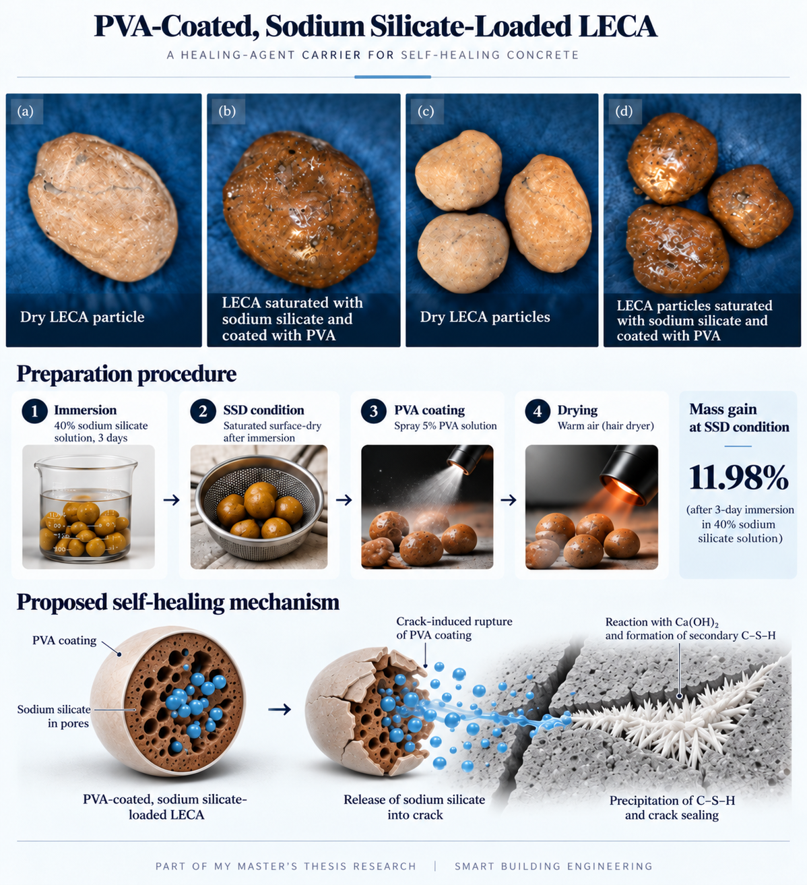

Master’s thesis · Experimental methodology
PVA-Coated, Sodium Silicate-Loaded LECA as a Healing-Agent Carrier for Self-Healing Concrete
How can healing agents be incorporated into concrete and released in a controlled manner when cracks develop? This is one of the questions I am investigating in my master’s thesis in Smart Building Engineering.
This part of the project explores lightweight expanded clay aggregate (LECA) as a porous carrier for sodium silicate-based healing agents. The preparation procedure combines sodium silicate impregnation with a protective polyvinyl alcohol (PVA) surface coating.
Experimental methodology
Sodium silicate impregnation
LECA particles were immersed in a 40% sodium silicate solution for 3 days to facilitate penetration and storage of the healing agent within the accessible pore structure. After immersion, the aggregates were brought to a saturated surface-dry (SSD) condition.
PVA surface coating
A 5% PVA solution was sprayed onto the SSD aggregate surfaces, followed by warm-air drying to form a protective polymeric coating.

Proposed self-healing mechanism
The porous LECA structure serves as a reservoir for the healing agent, while the PVA coating is intended to minimize premature leaching during concrete mixing and placement. Upon crack propagation, mechanical damage to the coating is expected to facilitate release of the stored sodium silicate into the surrounding cementitious matrix.
The released sodium silicate may subsequently react with calcium hydroxide (Ca(OH)₂), promoting the precipitation of secondary calcium silicate hydrate (C–S–H) within the crack region. This process has the potential to contribute to crack sealing and improved durability.